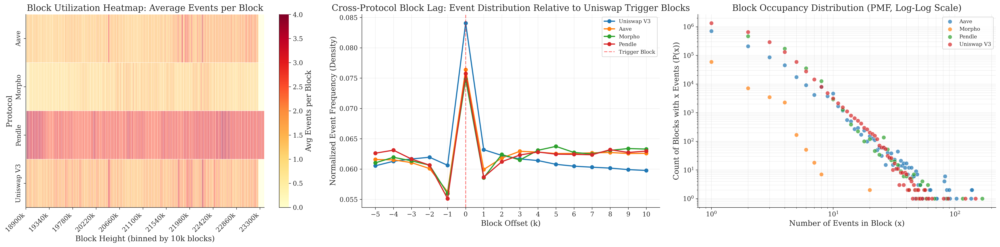
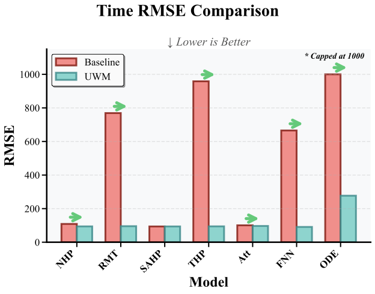
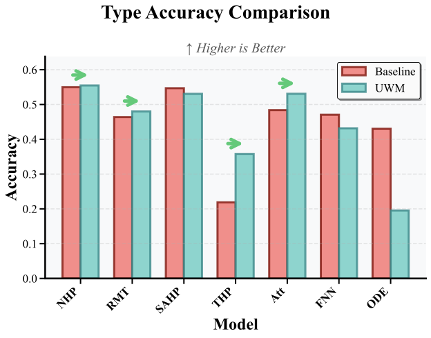
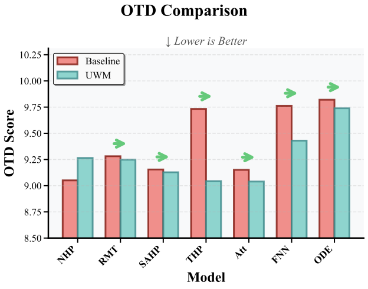

Automated Market Makers (AMMs), as a core infrastructure of decentralized finance (DeFi), uniquely drive on-chain asset pricing through a deterministic reserve ratio mechanism. Unlike traditional markets, AMM price dynamics is triggered largely by on-chain events (e.g., swap) that change the reserve ratio, rather than by continuous responses to off-chain information. This makes event-level analysis crucial for understanding price formation in AMMs.
However, existing research generally neglects the micro-structural dynamics at the AMM level, lacking both a comprehensive dataset covering multiple protocols with fine-grained event classification and an effective framework for event-aware modeling. To fill this gap, we construct a dataset containing 8.9 million on-chain event records from four representative AMM protocols : Pendle, Uniswap V3, Aave, and Morpho with precise annotations of transaction type and block-height timestamps.
We further propose an Uncertainty Weighted Mean Squared Error (UWM) loss that incorporates a block-interval regression term into the standard Temporal Point Process (TPP) objective via homoscedastic uncertainty weighting. Extensive experiments on eight TPP architectures across four DeFi protocols demonstrate that UWM reduces time-prediction error by an average of 31.17% while preserving event-type accuracy, establishing a robust benchmark for event-aware prediction in the AMM ecosystem. This work provides the necessary data foundation and methodological framework for modeling the discreteness and event-driven characteristics of on-chain price discovery.
Unlike continuous, order-book-driven markets, an AMM's price moves only when an event changes the reserve ratio. Symmetric liquidity events (Mint/Burn) leave the price untouched; asymmetric events (Swap, UpdateImpliedRate) reprice the pool immediately and discretely.
Concretely, a Pendle pool initialized with reserves $(R_A, R_B)=(100,100)$ and price $P_A=1.00$ stays at $P_A=1.00$ after a symmetric Mint that doubles both sides. A subsequent Swap of 20 B → A shifts reserves to $(220, 180)$ and drops $P_A$ to 0.82 in a single block. Price volatility in AMMs is therefore an exclusive derivative of ratio-altering events, not aggregate liquidity. This is why we model on-chain activity as a marked event stream on the block-height axis, rather than as a regularly sampled wall-clock time series.
Highest-frequency spot-trading venue. Bursty block utilization tracks exogenous volatility shocks.
Supply, borrow, repay, and liquidation events. Sparse but high-impact rate-update dynamics.
Mixed regime: several pools are stable while others exhibit heavy-tailed gap distributions.
PT/YT lifecycle events (Mint, Burn, Swap, UpdateImpliedRate) with continuous state-update churn.
We frame on-chain AMM activity as a marked temporal point process (TPP). For an asset $a$ the history is $\mathcal{S}^a = \{(t_i, y_i)\}_{i=1}^{L_a}$, where $t_i \in \mathbb{N}$ is the block height of the $i$-th event and $y_i \in \mathcal{Y}$ is its mark. The benchmark task is to predict the next mark $y_{i+1}$ and the next block $t_{i+1} = t_i + \Delta_{i+1}$ given the history $\mathcal{H}_{t_i}$.
Concurrent transactions in the same block are encoded as composite marks, yielding 31 distinct event-type combinations over five atomic types (Swap-in, Swap-out, Mint, Burn, UpdateImpliedRate). Block heights are kept in their native 8-digit scale because the inter-event gap distribution is heavy-tailed: a mean of 48.5 blocks on Pendle stretches to a maximum of 1,426 blocks, while Uniswap V3 hovers at a median of just 1 block.
The framework has two coupled contributions. Dataset. A standardized, block-aligned JSON corpus of 8.9M events across Uniswap V3, Aave, Morpho, and Pendle, extracted via a read-only Ethereum full node. UWM loss. An Uncertainty-Weighted MSE objective that combines the standard TPP negative-log-likelihood with a homoscedastic-uncertainty-weighted block-interval regression term, balancing type and time heads automatically rather than via hand-tuned weights.
UWM objective. With $\sigma_m = \mathrm{softplus}(s_m)$ and the three component losses $\ell_{\text{mark}}$, $\ell_{\text{time}}$, $\ell_{\text{mse}}$:
$\mathcal{L}_{\text{UWM}} = \tfrac{1}{2}\sum_{m=1}^{3}\bigl(\sigma_m^{-2}\,\ell_m + \log\sigma_m^2\bigr)$
The mark likelihood and time likelihood are inherited from any neural TPP backbone, while $\ell_{\text{mse}}$ pulls predictions toward the correct numeric block gap. The uncertainty weighting decides automatically how aggressively to trade type calibration against time accuracy on each protocol. The idea is orthogonal to the encoder and compatible with RNN, attention, and ODE-style TPPs.
The dataset captures 8,917,353 events from the Ethereum mainnet between Jan 1, 2024 and Sep 16, 2025 (block height 18,908,896–23,374,292), aggregated across 359 liquidity pools (Pendle: 296, Aave: 53, Uniswap: 5, Morpho: 5). Coverage is intentionally non-uniform, that is on-chain activity is highly skewed across mechanisms and we preserve this skew because it is part of the forecasting challenge.

(a) Block utilization. Pendle exhibits a high-intensity, continuous heatmap (deep red) driven by frequent state updates. Uniswap V3 shows bursty utilization. Intermittent vertical red stripes correlate with exogenous volatility shocks. Aave and Morpho remain sparse and low-entropy.
(b) Cross-protocol synchronization. Conditional event probability anchored on Uniswap V3 trigger blocks shows a sharp, synchronous peak at offset $k=0$ across Aave, Morpho, and Pendle, with rapid decay at $k=1$. Off-chain keepers and MEV bots close inter-block latency almost instantly.
(c) Occupancy heavy tail. Block-occupancy follows a power law $P(x) \propto x^{-\alpha}$. Uniswap V3 has the heaviest tail (extending past $x>200$), absorbing rare congestion bursts; Morpho has the steepest decay, indicating a far more predictable usage pattern.
We benchmark eight TPP backbones — NHP, RMTPP, SAHP, THP, AttNHP, IntensityFree, FullyNN, ODETPP — under both standard NLL and our UWM loss across the four protocols. All numbers are mean ± std over 5 random seeds on held-out test splits; chronological split prevents event-level leakage.
Two patterns dominate. First, NLL alone leaves several intensity-based models with severe temporal miscalibration on bursty protocols (Pendle, Aave). Second, UWM acts as a temporal stabilization mechanism: it dramatically reduces RMSE for collapsed models while remaining close to a no-op on already-calibrated baselines.
Baseline NLL versus UWM. Lower is better. Red = improvement, green = degradation. Mean ± std over 5 seeds.
| Model | Pendle — NLL | Pendle — UWM | Uniswap V3 — NLL | Uniswap V3 — UWM |
|---|---|---|---|---|
| NHP | 108.89 ± 1.84 | 94.28 ± 0.21 | 5.26 ± 0.24 | 4.70 ± 0.00 |
| RMTPP | 769.14 ± 147.25 | 95.55 ± 0.10 | 5.28 ± 0.07 | 6.59 ± 0.54 |
| SAHP | 93.87 ± 3.85 | 93.98 ± 0.29 | 4.64 ± 0.05 | 4.63 ± 0.02 |
| THP | 958.37 ± 62.97 | 94.50 ± 1.28 | 5.06 ± 0.03 | 5.06 ± 0.00 |
| AttNHP | 100.63 ± 2.22 | 96.73 ± 3.32 | 25.49 ± 1.13 | 5.03 ± 0.33 |
| IntensityFree | 81.32 ± 2.50 | — | 4.64 ± 0.16 | — |
| FullyNN | 665.56 ± 100.64 | 91.08 ± 1.71 | 108.72 ± 1.61 | 105.43 ± 0.29 |
| ODETPP | 6815.47 ± 1266.82 | 277.07 ± 293.57 | 5.20 ± 0.08 | 7.47 ± 2.39 |
Lending-protocol regimes are the hardest setting under NLL. UWM corrects the largest collapses (FullyNN on Aave: 4670 → 72) and remains close to a no-op when the baseline is already calibrated.
| Model | Aave — NLL | Aave — UWM | Morpho — NLL | Morpho — UWM |
|---|---|---|---|---|
| NHP | 80.27 ± 2.05 | 67.49 ± 0.28 | 206.32 ± 1.65 | 199.22 ± 0.73 |
| RMTPP | 670.71 ± 81.00 | 225.03 ± 22.98 | 204.07 ± 0.38 | 204.38 ± 0.33 |
| SAHP | 68.35 ± 3.77 | 72.17 ± 3.64 | 203.97 ± 0.03 | 204.74 ± 0.01 |
| THP | 359.56 ± 141.89 | 154.27 ± 17.64 | 1585.13 ± 619.19 | 390.92 ± 51.08 |
| AttNHP | 66.56 ± 0.31 | 65.90 ± 0.17 | 192.08 ± 0.15 | 192.10 ± 0.19 |
| IntensityFree | 58.85 ± 0.13 | — | 380.71 ± 16.69 | — |
| FullyNN | 4670.34 ± 124.96 | 71.60 ± 5.22 | 236.54 ± 31.55 | 204.21 ± 0.16 |
| ODETPP | 5182.72 ± 345.33 | 1509.63 ± 84.37 | 1240.81 ± 14.82 | 323.95 ± 11.37 |

UWM substantially reduces block-interval RMSE for the four temporally-collapsed intensity-based models — RMTPP, THP, FullyNN, ODETPP. The overall Pendle reduction averages 53.88%.
For models that are already well calibrated (NHP, SAHP, AttNHP), UWM behaves as a near no-op. The objective never destabilizes a strong baseline, it only kicks in where likelihood-only training fails on heavy-tailed gaps.
A natural worry with adding a numeric regression term is that it would steal capacity from the type head. The empirical picture says the opposite: type accuracy is preserved or improved on the protocols where UWM most aggressively rescues the time head.
This is consistent with the homoscedastic uncertainty parameterization. When the time component becomes easier to fit, the model can spend more of its capacity on the discrete mark distribution.


The optimal-transport distance on five-event prediction horizons mirrors the single-step RMSE picture: UWM dominates on the burst-collapsed models and matches the baseline elsewhere. The ranking across backbones is preserved as horizon grows, so the loss does not introduce a horizon-specific artifact.
UWM is a stabilizer, not a universal upgrade. The largest gains concentrate on bursty regimes (Pendle, Aave) and on architectures whose continuous-time parameterization is sensitive to heavy-tailed gaps (RMTPP, THP, FullyNN, ODETPP). Already-calibrated models on already-easy regimes (Uniswap V3) move only marginally.
Numeric residuals matter, not just likelihoods. Pure NLL fits the gap distribution in shape but tolerates large numeric errors on the tails. Pendle, Aave, and Morpho show that the resulting RMSE explodes on a small number of "blast points," and that adding a residual-aware regression term is the cheapest way to recover.
Type accuracy is robust. Across all four protocols, UWM maintains or improves event-type prediction accuracy, the rebalancing happens through the learned uncertainty weights, not by sacrificing the discrete head.
Cross-protocol heterogeneity is the headline finding. Bursty AMM dynamics cannot be reduced to a single universal "best model"; the right backbone depends on the protocol's gap distribution, and the loss has to absorb the variance.
As a downstream illustration, consider a Pendle sUSDe pool initialized with 1,000 PT and 2,000 SY (PT/SY = 0.50). A predicted Swap two blocks ahead adds 200 PT and removes 400 SY, taking the reserves to 1,200 PT and 1,600 SY (PT/SY = 0.75). PT then trades at $\approx 1.333$ SY rather than $2.0$ SY — a $\sim$33% drop — which raises the implied APY of holding PT to maturity.
Yield trading. The higher implied yield motivates rebalancing from PT to YT. Selling 100 PT now realizes $100 \times 1.333 = 133.3$ SY while increasing exposure to future yield growth, which is exactly the design intent of YT.
Arbitrage. If PT trades externally at 1.50 SY, the predicted swap reverses the profitable direction. Before the swap the trader buys 100 PT externally for 150 SY and sells into the pool at 200 SY (50 SY profit before fees); after the swap the pool offers 100 PT at 133.3 SY, so the trader buys from the pool and sells externally at 150 SY (16.7 SY profit before fees). The forecast turns the raw event log into a proactive signal for either yield rebalancing or cross-market arbitrage.
We presented Deep-AMM-Events, a comprehensive 8.9M-event corpus across four representative DeFi protocols (Pendle, Uniswap V3, Aave, Morpho) and a complementary Uncertainty Weighted MSE loss that augments standard TPP training with a homoscedastic-uncertainty-weighted block-interval regression term. Across eight TPP backbones, UWM reduces time-prediction error by an average of 31.17% while preserving event-type accuracy, with the largest gains concentrated on bursty regimes where likelihood-only training collapses. The dataset and benchmark provide a foundation for future work on cross-protocol synchronization, multi-step block-height forecasting, and event-aware execution strategies in on-chain markets. All datasets and source code are publicly released.
@inproceedings{jia2026amm,
title = {Towards Event-Aware Forecasting in DeFi: Insights from On-chain Automated Market Maker Protocols},
author = {Jia, Huaiyu and You, Jiehshun and Liu, Jingyu and Luo, Yizhi and Sun, Shuo},
booktitle = {Proceedings of the 32nd ACM SIGKDD Conference on Knowledge Discovery and Data Mining},
year = {2026}
}